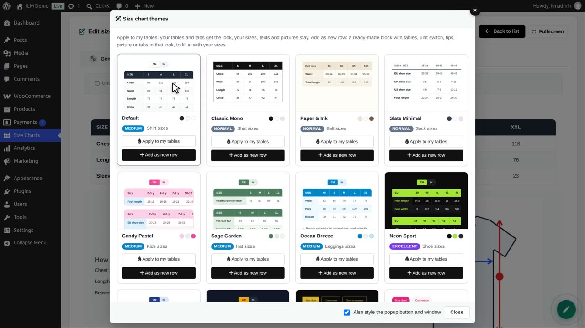
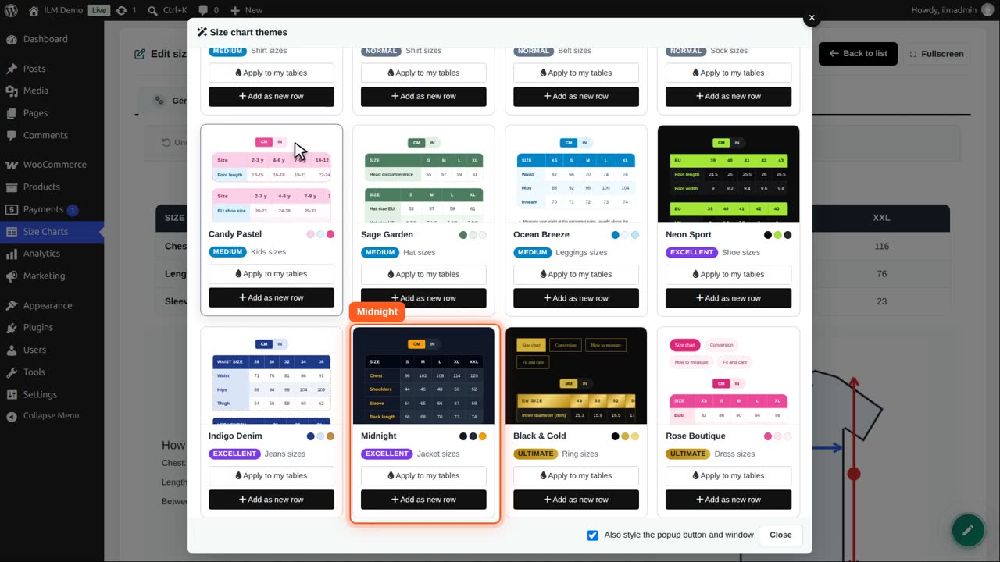
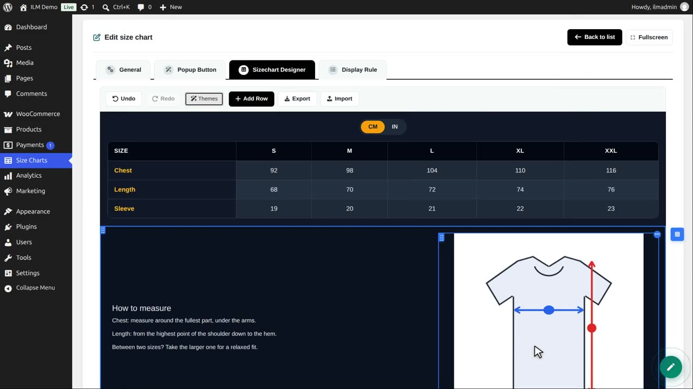
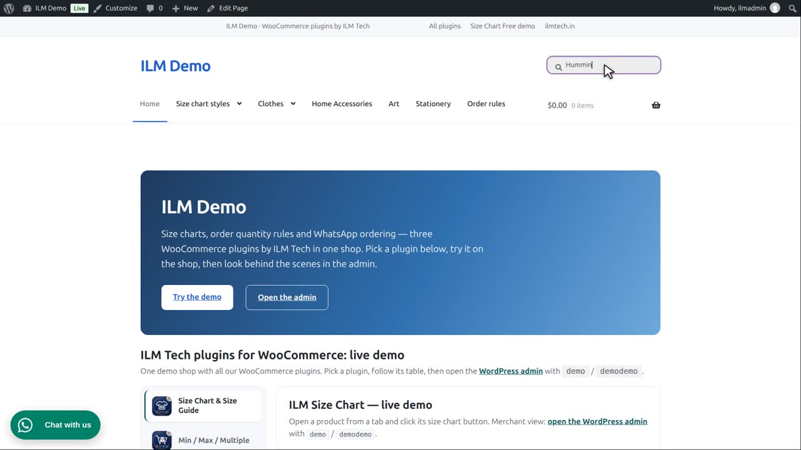
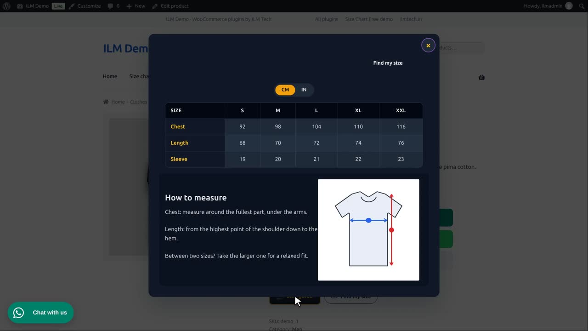
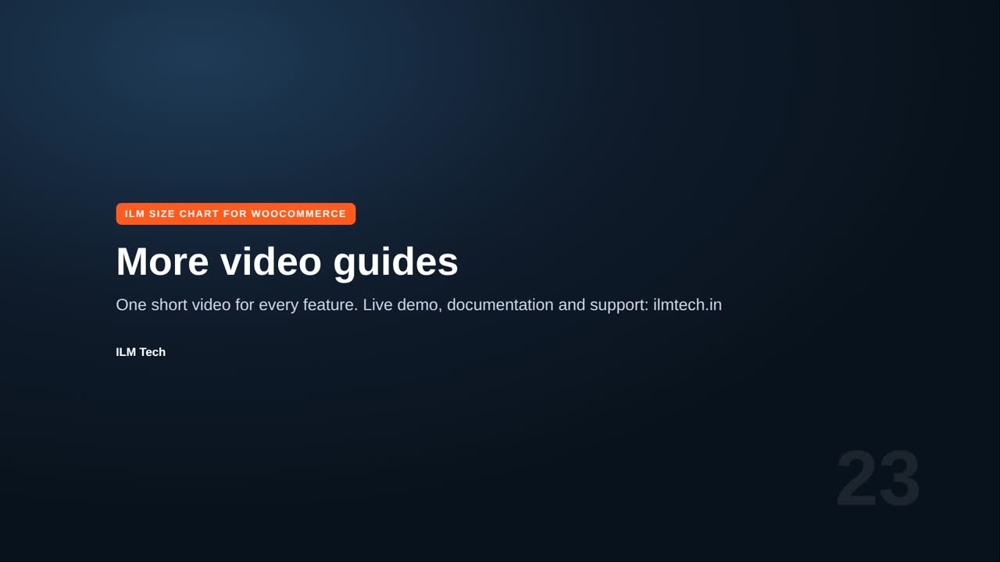

Edit the chart, open the designer, and click Themes. Every card shows a sample table in that theme.

Each theme has two buttons. Apply to my tables gives your own tables this look. Add as new row adds a complete sample block in this theme.

We click Apply to my tables on Midnight. A bar asks to confirm, and says how many tables change.

Yes. The table has the Midnight colours; its content and units are kept.

Not happy? One click on Undo takes the whole theme back.

We keep it and save. The shop shows the new look.

The option Also style the popup button and window, in the themes window, matches the button to the theme too.
